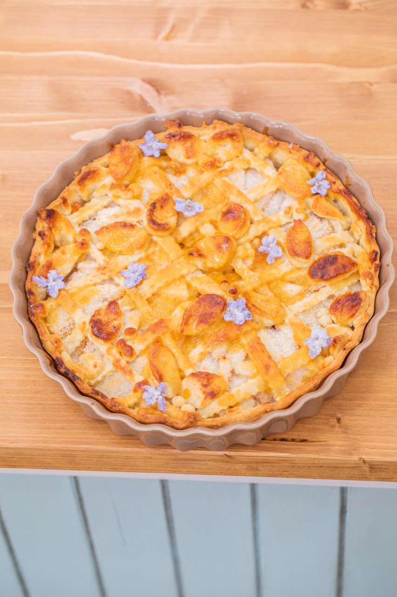
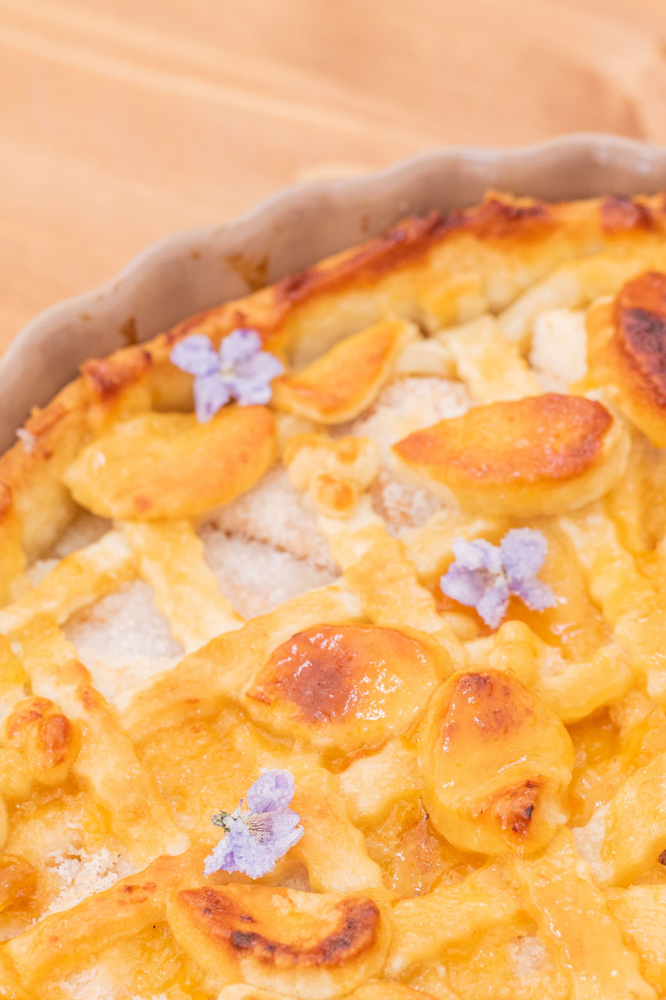
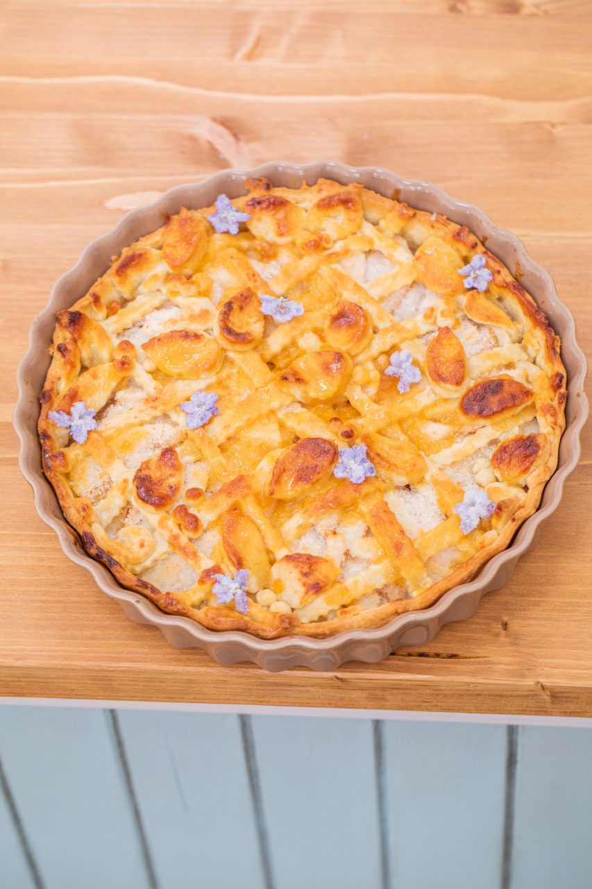
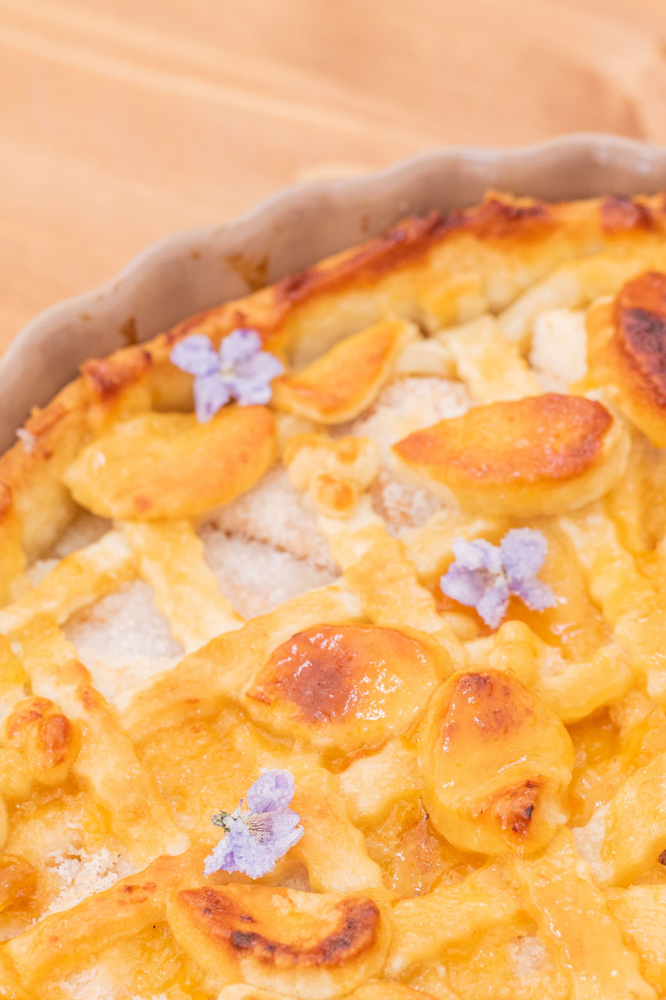

„Mřížkový koláč jsem nedělala již hodně dlouho. Spíše v začátcích mého pečení. Kombinovala jsem ho s různým ovocem. U nás hlavně domácí jablka, hrušky či třešně. Když už, tak ho peču spíše v létě. Je totiž takový osvěžující a k letnímu období se bezvadně hodí. V zimě je výborná kombinace jablek či právě hrušek společně se skořicí. To potom voní celý dům. Ráda zkouším i neobvyklé druhy těst, jako třeba ze třtinového cukru či slanou verzi. Upřímně jsem těmto typům koláče nepřišla ještě úplně na kloub. Pokaždé se mi u nich něco nevydaří. Tvrdší těsto, nedopečená náplň, kraje se nehezky spečou a slezou z okrajů formy... Asi jsem objevila další typ na kurz sebezdokonalení se v pečení.“
Koláč
5 větších hrušek (polotvrdých)
450 g hladké mouky
260 g másla
5 až 6 polévkových lžic studené vody
1 a ½ polévkové lžíce citronové šťávy
250 g marcipánu
3 polévkové lžíce meruňkového džemu
1 polévková lžíce rumu
1 polévková lžíce citronové šťávy
špetka soli
Na potření
1 polévková lžíce meruňkového džemu
½ polévkové lžíce rumu
½ polévkové lžíce citronové šťávy
strouhaný kokos (2–3 polévkové lžíce)
moučkový cukr na podsypání marcipánu
hladká mouka na vál
mléko na potření
V míse si pomocí prstů promícháme mouku s máslem. Až vytvoří hrubé drobty, přidáváme vodu a zpracováváme. Můžeme přemístit na vál a vypracujeme kompaktní těsto. Větší část těsta si rozválíme do kruhu, pomoučíme a ořízneme podle formy ale tak, aby bylo o pár cm navíc. Pomocí válečku přeneseme do formy a vtlačíme až ke krajům.
Rozválíme si marcipán, podsypeme cukrem a umístíme doprostřed koláče, který propícháme vidličkou. Troubu předehřejeme na 220 °C.
Oloupeme hrušky, nakrájíme na půlměsíčky a umístíme dokola po celém koláči, který posypeme kokosem, aby hrušky nepustily příliš šťávy. Ze zbylého těsta si vyválíme plát a z něj pomocí rádýlka nakrájíme proužky a poskládáme mřížku. Ze zbytku si potom pomocí nože vykrojíme lístky a pokládáme je na kraj koláče dovnitř. Doprostřed ještě vytvoříme lístky s bobulkami. Potřeme mlékem a dáme péct asi na 30 až 35 minut.
Těsně před koncem si smícháme 1 polévkovou lžíci džemu, ½ polévkové lžíce rumu a ½ polévkové lžíce citronové šťávy a celý koláč potřeme. Necháme vychladnout a můžeme servírovat.
 
